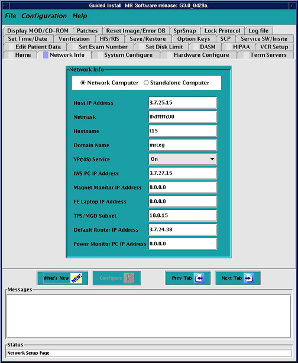
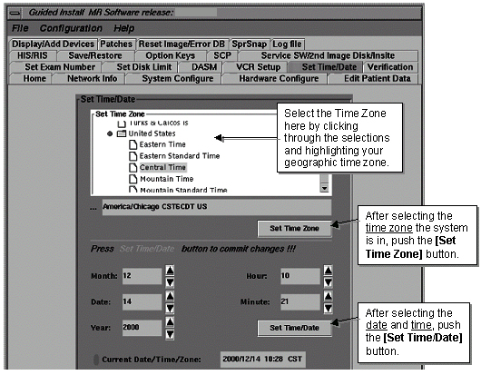

Proprietary to General Electric Company
Direction 5440000, Rev# 5
Signa HDxt Service Methods
Module Version 4.0, Version Date 6/3/10
Proprietary to General Electric Company |
| Required Persons | Preliminary Reqs | Procedure | Finalization |
|---|---|---|---|
| 1 | Not Applicable | 45 mins | Not Applicable |
All Host computers for new installations are loaded with software that is preconfigured with some default values. The Host computer must be reconfigured for the correct site configuration information using the Guided Install GUI. For systems with upgraded hardware or a new configuration, the Guided Install GUI is used to change the software to work with the new configuration. The Guided Install GUI is used to reconfigure the software to match your customer’s environment and the hardware that is actually shipped to your customer. For a new installation, review the data on all tabs and update any information to match actual hardware, system, network, or other configuration information. If this is a new/upgraded Signa installation or if the system just needs to be reconfigured, do the following to start the Configuration GUI:
Launch Guided Install.
From the Common Service Desktop, select Configuration > Guided Install > FE Mode, and launch the tool. Type operator when asked for the root password. (See Illustration 1.)
Illustration 1: Guided Install Home Screen

Select [Next Tab] button on the Guided Install screen to bring up the Network Info tab shown in Illustration 2.
Illustration 2: Info Tab on Guided Install Screen

Help documentation is built into the GUI. Click the [Help] button to view the help information to be used to fill out the required information.
Click the [Next Tab] button to move through the tabs in order. Modify entries to match the system as required. Continue to use [Help] to provide guidance specific to each tab.
Click the [Next Tab] button to move through the tabs in order. Modify entries as required to match the system. Continue to use [Help] to provide guidance specific to each tab.
There are three regulatory bodies that have defined limits for the use of MR systems: The federal Food and Drug Administration (FDA, United States), the International Electrotechnical Commission (IEC, Europe), and the Ministry of Health and Welfare (MHW, Japan). A GEMS MR system that is installed in a country regulated by one of these bodies has to be compliant with the rules they defined.
Check/change the “Governing Body” selection on the Hardware Configure tab so it is correct for the country where the scanner is located: iec, mhw1, mhw2, or fda2.
Be aware that the Time/Date tab will never fail verification. There are separate buttons for configuring this tab. (See Illustration 3). If the Host needs to be reconfigured or time and/or date changed at any time:
Select the Time Zone where the system is located, then select [Set Time Zone].
Select the date and local time, then select [Set Time/Date].
Illustration 3: Set Time/Date Menu

Before exiting the GUI, insert a MOD into the drive with Side A up. Proceed to the top left corner of the Install GUI, and select [File] > [Save GI Configuration to MOD].
| NOTE: | This process does not create a SaveInfo disk. It just creates a copy of the information already entered on the GUI tabs for use in the next software installation. Label the MOD with Configuration Savedand site and date. |
Exit the Install GUI by selecting [File] > [Quit]. If any error conditions still exist, a warning will indicate that no changes will be made before exiting.
Follow the instructions in Loading Service Software.
Save your work by doing a SaveInfo.